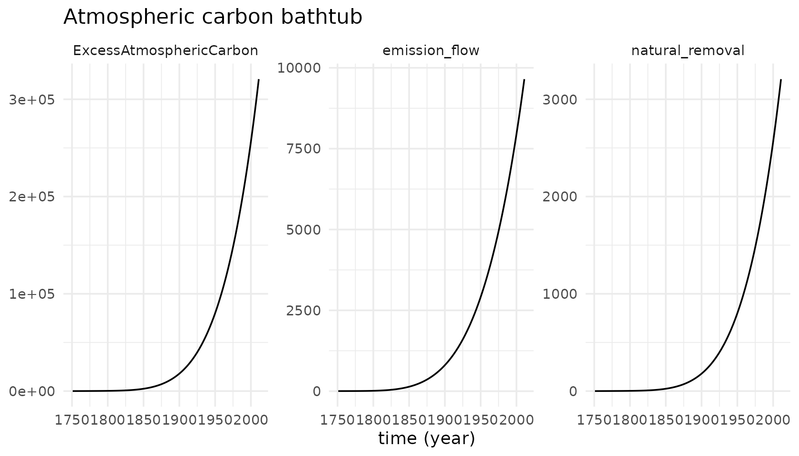
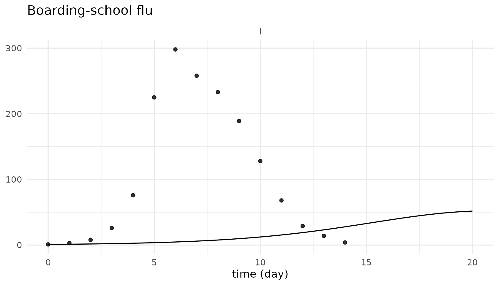
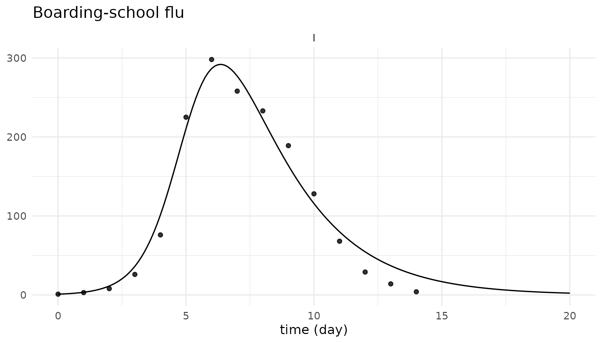
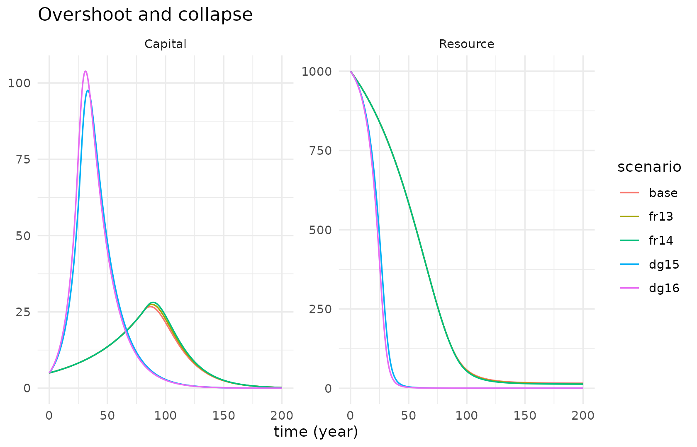

library(tidysd)
#>
#> Attaching package: 'tidysd'
#> The following object is masked from 'package:stats':
#>
#> simulateData enters a model in three ways, all additive to the three layers.
1. An exogenous driver
An input() is an auxiliary whose values come from data
rather than from a formula. It is declared in the structure like
anything else – so the dependency graph and the unit check see it – and
only the series itself is a parameter.
carbon_struct <- sd_structure(
meta(name = "Atmospheric carbon bathtub"),
stock("ExcessAtmosphericCarbon", units = "MtC", non_negative = TRUE),
input("emissions", units = "MtC/year"),
flow("emission_flow", from = .source, to = "ExcessAtmosphericCarbon",
units = "MtC/year"),
flow("natural_removal", from = "ExcessAtmosphericCarbon", to = .sink,
units = "MtC/year")
)
carbon_eqns <- sd_equations(
emission_flow ~ emissions,
natural_removal ~ ExcessAtmosphericCarbon * removal_constant
)
head(global_emissions_synthetic, 3)
#> time emissions
#> 1 1751 3.000
#> 2 1752 3.049
#> 3 1753 3.099
carbon_pars <- sd_parameters(
constant(removal_constant = 0.01),
initial(ExcessAtmosphericCarbon = 0),
input_series("emissions", data = global_emissions_synthetic, interp = "linear")
)
out <- simulate(carbon_struct, carbon_eqns, carbon_pars,
spec = sim_spec(1751, 2011, dt = 1, time_unit = "year"))
autoplot(out, vars = c("ExcessAtmosphericCarbon", "emission_flow", "natural_removal"))
The solver interpolates the series onto its own grid, so the data’s
row spacing and the model’s dt need not agree.
range = "hold" (the default) holds the first and last
values outside the data range; "extend" extrapolates
linearly. A Date time column is resolved against
sim_spec(start = ).
Because the series is a parameter, a counterfactual is a parameter edit – the model text never moves:
flat <- transform(global_emissions_synthetic,
emissions = pmin(emissions,
emissions[time == 1990]))
carbon_flat <- update(carbon_pars,
input_series("emissions", data = flat, interp = "linear"))
out2 <- simulate(carbon_struct, carbon_eqns, carbon_flat,
spec = sim_spec(1751, 2011, dt = 1, time_unit = "year"))
c(actual = max(subset(as.data.frame(out), variable == "ExcessAtmosphericCarbon")$value),
frozen_at_1990 = max(subset(as.data.frame(out2),
variable == "ExcessAtmosphericCarbon")$value))
#> actual frozen_at_1990
#> 320724.2 293604.62. An observed series, for comparison
simulate(..., observed = ) stacks the observed columns
into the output tibble tagged source = "observed" beside
"model", so autoplot() overlays them. Use
map = when the column names differ from the model’s.
ex <- sd_example("boarding_school_flu")
head(ex$observed, 4)
#> time sInfected
#> 1 0 1
#> 2 1 3
#> 3 2 8
#> 4 3 26
out <- simulate(ex$structure, ex$equations, ex$parameters, spec = ex$spec,
observed = ex$observed, map = c(I = "sInfected"))
table(out$source)
#>
#> model observed
#> 966 15
autoplot(out, vars = "I")
Those are the starting guesses, not a fit – the model is nowhere near the data yet.
3. Calibration
calibrate() takes the same three layers as
simulate(), plus the observed frame, a target
map from model variable to data column, the free constants
and their bounds. It returns a fitted sd_parameters you
pass straight back.
fit <- calibrate(ex$structure, ex$equations, ex$parameters, spec = ex$spec,
observed = ex$observed,
target = c(I = "sInfected"),
free = c("beta", "infectious_period"),
lower = c(beta = 0, infectious_period = 1),
upper = c(beta = 0.01, infectious_period = 5))
fit
#> <sd_calibration>
#> estimated:
#> beta 0.00218772
#> infectious_period 2.25504
#> SSE 4121.92 over 15 observations
#> convergence 0 (converged)beta reproduces the value Duggan’s
FME::modFit reports for this outbreak (about 2.18e-3 per
day). The implied basic reproduction number:
unname(fit$fit$estimate[["beta"]] * 762 * fit$fit$estimate[["infectious_period"]])
#> [1] 3.759251And the fitted parameters go back through the same verb:
fitted <- simulate(ex$structure, ex$equations, fit$parameters, spec = ex$spec,
observed = ex$observed, map = c(I = "sInfected"))
autoplot(fitted, vars = "I")
One verb, not a sweep or an optimisation framework.
observed = on simulate() is independent of the
fit – it just carries the data through to the output.
Scenarios
Not data, but the same spirit: many runs, one call. Overrides name
constants, and every run is tagged in a scenario
column.
out <- sd_example_run("overshoot")
autoplot(out, vars = c("Capital", "Resource"))